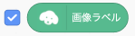

2. ティーエムツー・スクラッチで画像認識
1
学習データを読み込む
ではティーエムツー・スクラッチを使って画像認識をしてみましょう。 そのために、以下の手順で先程アップロードしたティーチャブルマシンの画像認識の学習データを読み込みます。
- 「画像分離モデルURL」ブロックをスクリプトエリア(画面中央の白い画面)に置きます
- 中に書いてあるアドレスを先ほどメモ帳アプリにコピーした画像認識の学習データのアドレスに置き換えます。最後の「/(スラッシュ)」までコピーしないと正しく動かないので注意してください。
- 「画像分離モデルURL」ブロックをクリックすると「緑の旗」ボタンが押された状態になるのでしばらく待ちます。読み込みが終わると「緑の旗」ボタンが元に戻ります。
- 「画像ラベル」変数ブロックの左側のチェックボックスにチェックを入れます。 
- ステージ(プログラムの実行画面)に認識された画像の名前が表示されるので「グー」「チョキ」「パー」を認識するか確認します。

2
簡単なプログラムをつくってみよう
これでスクラッチを使って画像認識ができるようになりましたので、何か簡単なプログラムをつくってみましょう。 今回は「グー」を認識したら猫に「グーだね」、それ以外の時は「グーじゃないね」と言わせてみます。
- ある画像が見つかると「〜の画像が見つかった」演算ブロックが「真」になりますので、これを「もし〜なら」制御ブロックと組み合わせて使います。
- よって目的のプログラムは次のようになります。

チャレンジ
「グー」を認識したら「グーだね」、「チョキ」を認識したら「チョキだね」、「パー」を認識したら「パーだね」、何も見つからない時は「何も無いね」と言わせてみましょう。